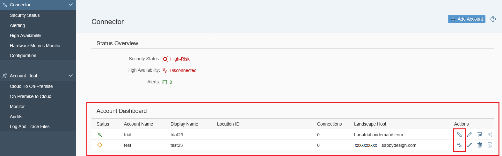

The major principle for the connectivity established by the Cloud connector is that the Cloud connector administrator should have full control over the connection to the cloud, i.e. they should be able to decide if and when the Cloud connector need to be connected to the cloud at all, to which accounts it shall be connected, and which on-premise systems and resources shall be accessible to applications of the connected account.
Using the administration UI, the Cloud connector administrator can connect and disconnect the Cloud connector to the configured cloud account. Once disconnected, there is no communication possible – neither between the cloud account and the Cloud connector nor to the internal systems. The connection state can be verified and changed by the Cloud connector administrator on the Account Dashboard tab of the UI as shown in the following screen shot:

Effective Cloud connector version 2.2.0, a single Cloud connector instance can be connected to multiple accounts in the cloud. This is useful especially for customers who need multiple accounts to structure their development or to stage their cloud landscape into development, test, and production. These customers have the option to use a single Cloud connector instance for multiple accounts of theirs. Nevertheless, it is recommended to not use accounts running productive scenarios and accounts used for development or test purposes within the same Cloud connector. A cloud account can be added to or deleted from a Cloud connector viaAccount Dashboard, using the Add and Delete buttons (see screenshot above).
A detailed description on how to add, delete, connect or disconnect accounts can be also found here: Managing Accounts